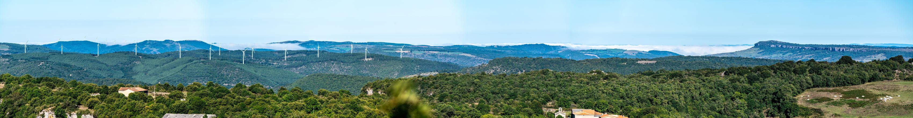

Photo © Léo DanielCols, lacets et grands espaces : au départ de Ceilhes, les routes des Monts d'Orb font le bonheur des motards. Cinq itinéraires entre lacs, gorges et causses.
Entre l'Hérault et l'Aveyron, le Haut-Languedoc est un paradis pour les motards. Au départ de Ceilhes-et-Rocozels, les routes des Monts d'Orb enchaînent cols, lacets et grands paysages : lacs, gorges, causses et forêts profondes, avec une circulation rare et un bitume qui serpente.
De l'eau turquoise du lac d'Avène aux terres rouges du Salagou, voici quelques boucles d'anthologie à parcourir au guidon.
Une boucle facile et photogénique : on longe le lac des Monts d'Orb, on traverse Ceilhes et Avène, entre forêts et reflets d'eau.
Cap au sud vers Bédarieux, Lamalou et Roquebrun : la route épouse le fleuve dans des gorges sauvages, enchaînant courbes et points de vue.
Les terres rouges iconiques du lac du Salagou et le cirque dolomitique de Mourèze : un décor lunaire à moins d'une heure.
Grands plateaux, cirque de Navacelles et villages templiers : un terrain de roulage mythique aux portes du Haut-Languedoc.
Vers Camarès, Sylvanès et le Rougier : cols boisés, virages à n'en plus finir et terroir du Roquefort, côté Sud-Aveyron.
Au bord du lac, l'épicerie-bar L'Esquirol est une halte idéale : café, terrasse, ravitaillement et produits locaux avant de repartir sur les cols. Plusieurs hébergeurs du secteur accueillent volontiers les motards.
Routes de montagne : prudence sur les revêtements humides, le gravillonnage en sortie d'hiver et la divagation possible d'animaux. Le secteur accueille régulièrement des rassemblements de motards — renseignez-vous auprès de l'Office de tourisme Grand Orb.
Page de découverte « tourisme à moto ». Si « Hérault Moto » désigne un club ou un commerce précis, écrivez-nous pour le mettre à l'honneur ici.